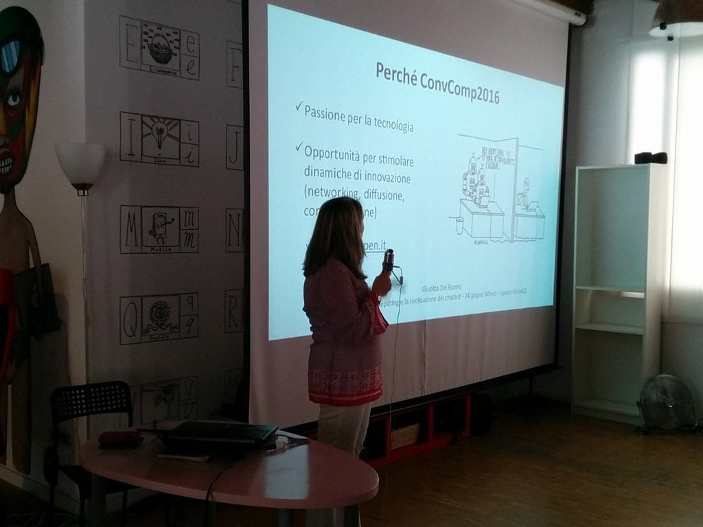
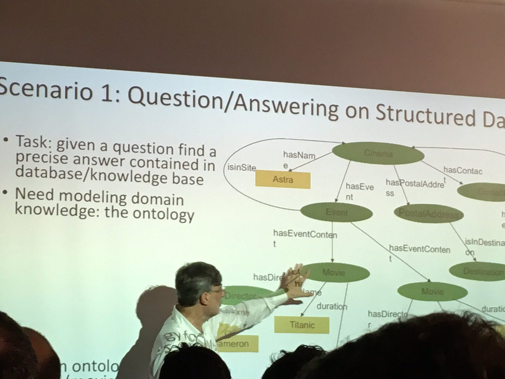
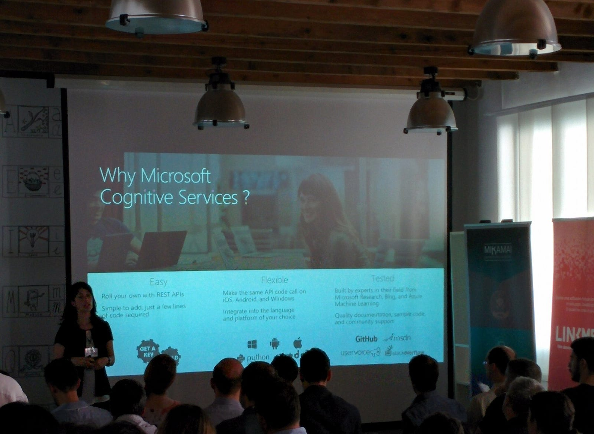
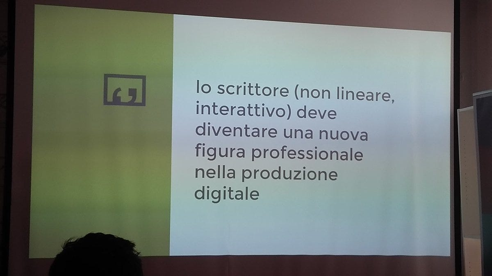

Chatbot, cosa sono e perchè sono importanti

Questo articolo è stato pubblicato il originariamente (10 Giugno 2016) sul sito www.startupbusiness.it. Rispetto all’articolo originale (prima dell’evento), sono state qui aggiunte le foto dell’evento #convcomp2016
L’organizzatore del primo evento italiano dedicato alle chatbot e al conversational commerce, Giorgio Robino, spiega cosa sono le chatbot e perchè sono una rivoluzione.
Il mio interesse per i chatbot ha avuto inizio nella primavera del 2015: stavo lavorando a una mia soluzione e-commerce di prossimità, arrovellandomi sulla ricerca del modo “giusto” per un online shopping di prodotti di acquisto ricorrente (la spesa quotidiana, per esempio).
Incominciai così a pensare che il modo più veloce e naturale per fare un ordine online al supermercato, non fosse la scelta di immagini di questa o quest’altra marca e tipo, l’intento di acquisto infatti in molti casi può essere espresso più facilmente in forma testuale:
“2 litri di latte scremato Parmalat”.
Il passo di ragionamento successivo fu quello di capire quale fosse il “canale” ottimale per l’espressione testuale. Malgrado il tanto parlare di app native per ogni business, la realtà è che la maggior parte delle persone ha sul proprio telefono sicuramente una app di messaggistica istantanea: Whatsapp (in sostituzione degli SMS) soprattutto in Italia, e poi Facebook ecc. Era lì quindi, nelle applicazioni di messaggistica istantanea che bisognava lavorare, offrendo servizi innovativi basati su un’interfaccia testuale.
Mi si aprì un mondo nuovo quando nel giugno 2015, Telegram, la startup dei fratelli Pavel e Nicolai Durov, mise a disposizione le Bot API e quindi fornendo la possibilità di creare account che non corrispondono più a persone fisiche, ma sono applicazioni software che fanno “qualsiasi” cosa e con cui “parlare” con dei messaggi di testo.
Il 19 gennaio 2016 poi, Chris Messina, technical leader in Uber, scrisse un articolo, ormai diventato una pietra miliare del “conversational commerce”, creando un hashtag subito diventato simbolico del cambio di paradigma: #convcomm.
Ma proviamo a chiarire cosa sono i chatbot in generale
Per me la definizione è semplice e molto ampia:
“Un chatbot è qualsiasi software che dialoga in linguaggio naturale”
Sulla base di questa definizione, si potrebbe definire chatbot qualsiasi programma, a prescindere dalle applicazioni di messaggistica su smartphone. Un esempio molto discusso è in questo senso, per esempio, la stratup X.ai di Dennis Mortensen, che ha sviluppato un chatbot che, rispondendo via e-mail organizza meeting, con un’efficacia paragonabile a quella di un ufficio di segretariato fatto da esseri umani.
Un altro ambito davvero interessante è quello dei chatbot a comando vocale su smarthome hub. Ne sono esempi Amazon Echo (disponibile ora solo in USA) e l’annunciato Google Home (probabilmente disponibile a fine 2016). Si tratta di dispositivi hardware, dotati di microfoni e altoparlanti e connessi via internet a server centrali, a cui l’utente può semplicemente parlare per ottenere informazioni e per fare acquisti.
Molto probabilmente questi dispositivi presto sostituiranno a casa nostra i laptop e i telefonini, permettendoci di fruire di servizi “generalisti” per i cittadini (anche quando questi sono poco informatizzati). Quindi, più che centraline di controllo di dispositivi IoT a comando vocale, si tratta proprio di sistemi che permetteranno conversazioni vocali con i cosiddetti agenti virtuali. Probabilmente questi dispositivi saranno inglobati nei televisori (vi ricordate ‘1984’ di George Orwell?).
Un altro settore interessate è a mio avviso quello dei voice-chatbot embedded su dispositivi non necessariamente sempre connessi on-line a internet: penso per esempio all’enorme potenzialità dei chatbot per automobile, per il controllo del veicolo, la navigazione e l’infotainment.
Dunque, fino a questo punto ho fatto una superficiale panoramica di alcune tra le possibili applicazioni presenti e future dei chatbot, senza mettere volutamente l’accento sulla tanto osannata associazione tra chatbot e intelligenza artificiale; un’associazione che si rivela spesso falsa nei fatti.
La tecnologia conversazionale, seppure sia davvero un classico ramo di studi dell’intelligenza artificiale (che negli anni ’70 qualcuno chiamava “cibernetica”), è rimasta per molto tempo “nel cassetto” di pochi ricercatori.

È vero, da qualche anno si parla molto e sono stati fatti realmente dei passi avanti nelle tecniche di machine learning, ma soprattutto nell’ambito dell’analisi statistica su big data. È rimasta invece un poco trascurata la ricerca del natural language understanding e del conversational computing, nel senso di teorie e tecniche della semantica della conversazione.
Nel 2016 ci troviamo solo agli inizi di una possibile nuova rivoluzione, ma al momento, nonostante i diversi annunci di questa o quella fantasmagorica tecnica di modello generativo o deep learning, a me sembra che si sia ancora lontani dall’applicazione pratica.
Come nasce l’idea di organizzare un evento di un giorno dedicato a queste tematiche, proprio ora e proprio in Italia, a Milano ?
Dopo aver programmato alcuni prototipi di chatbot per Telegram, ho proposto ad alcune grandi aziende italiane delle soluzioni pratiche di conversational ecommerce, ma mi ritrovavo sempre a dovere spiegare a interlocutori increduli e scettici anzitutto cosa fosse un chatbot ?! No way! Mi sono reso conto della arretratezza italiana nella visione di una strategia digitale innovativa su questi temi; era quindi necessario fare un passo indietro, promuovendo e attuando innanzitutto un’azione culturale.
L’idea ha preso corpo a febbraio, copiando un poco il lavoro di alcuni appassionati di chatbot viennesi e berlinesi, che organizzarono il primo meetup a Berlino su questi argomenti. Pensai: perché non farlo anche in Italia?
Insieme a Giuditta Del Buono ho lavorato alla definizione di un “format” di evento che fosse più ampio e completo di un meetup per nerd, qualcosa a metà tra un workshop e una conferenza, e così è nato www.convcomp2016.it, che si terrà il prossimo 24 giugno presso lo spazio Venini42 di Milano, grazie al supporto delle società Mikamai e LinkMe che hanno da subito creduto nel progetto e al sostegno di tante altre piccole-grandi realtà innovative attive nel settore.
Il conversational computing e la rivoluzione dei chatbot
Primo chatbot-day italiano sui sistemi di dialogo in linguaggio naturale ed il conversational commerce
È stato un lavoro di molti mesi impiegati a coinvolgere relatori e sponsor. Le difficoltà sono state sia pratiche, di copertura del budget, sia sostanziali rispetto ai contenuti: come avevo un poco previsto, in seguito agli annunci quasi congiunti di Facebook e Microsoft ad aprile 2016, e a seguire quello di Google, di soluzioni radicalmente innovative in questo ambito, i chatbot e i sistemi di intelligenza artificiale collegati, sono “improvvisamente” passati al primo posto della strategia dei big player mondiali, a detta dei CEO delle aziende stesse.
C’è stata quindi in questi ultimi mesi una “guerra” serratissima tra big player con rilasci di “nuove” tecnologie (in realtà sperimentate dalle aziende da mesi, anzi da anni), con sorprendenti rincorse all’ultimo minuto, mai viste in passato, a memoria mia. Si pensi ai vari rilasci opensource di Google (da TensorFlow a SyntaxNet qualche settimana fa), si pensi all’annuncio del dispositivo Google Home, chiaro rivale di Amazon Echo e pretendente al trono degli smarthome hub a interfaccia vocale, e ancora al Microsoft Bot Framework e i Microsoft Cognitive Services, a IBM Watson Dialog, per non parlare poi delle decine di AI-engine, piattaforme proposte da piccole e grandi startup.

E in Italia?
Al momento c’è una sostanziale afasia. Molti articoli che parlano di intelligenza artificiale spesso purtroppo non entrano davvero nel merito e non analizzano il valore delle soluzioni proposte. In Italia, ci sono di fatto ancora troppe poche aziende che stanno lavorando su questo tema e in grado di vantare un’eccellenza (fatta eccezione per poche realtà, che in alcuni casi con mio grande piacere saranno presenti a #convcomp2016).
Eppure noi italiani abbiamo delle congenite abilità “cognitive” in quello che io chiamo il “conversational computing”!
Uno dei filoni di ricerca nel settore dei chatbot e prossima generazione attesa di chatbot è quello dei chatbot “persona”, ovvero chatbot che non solo forniscono servizi impersonali (si pensi per esempio all’automazione del customer care), ma siano dotati di una propria specifica “personalità” (scelta dall’utente umano). Paradossalmente per creare chatbot che siano personaggi, dotati di propria personalità, non è nemmeno necessario ricorrere a chissà quale magico motore proprietario di machine learning.
Per esempio le “vecchie” (fine anni ’90) tecniche di dialog flow scripting, permettono già oggi di realizzare sistemi piuttosto sofisticati di dialogo interattivo (si pensi a Xiaoice di Microsoft), ma il punto focale (molto interessante anche sul piano dello sviluppo di nuove opportunità professionali) è che sono necessarie competenze umanistiche, di narrativa, sceneggiatura, psicologia e addirittura di drammaturgia (a #convcomp2016 ci sarà un intervento proprio su questo), a fare da complemento alle pur indispensabili competenze tech di computer science.
Nella creatività della parola, della scrittura, noi italiani non siamo secondi ad altri, ma dobbiamo svegliarci. Bisogna uscire dalle nicchie di competenza iper-verticale, e invece fare sistema con una visione di strategia d’innovazione italiana, che, a mio giudizio, più che dalla singola piccola deve venire dall’investimento delle grandi aziende private, dell’università pubblica e degli enti di ricerca, in generale su grandi progetti nazionali (si pensi per esempio, rispetto al CNR, alle enormi possibilità dei chatbot nell’e-learning e nella didattica, solo per citare un ambito applicativo di utilità pubblica).

Tra gli obiettivi dell’evento c’è anche quello di provare a buttare qualche seme su possibili temi di ricerca scientifica, per esempio: condivisioni di basi di conoscenza espressa come conversazioni, interazione automatica tra macchine, trade-off tra sistemi proprietari di intelligenza artificiale, realizzazione di grandi progetti open-source e di intelligenza distribuita (si pensi all’IoT), valutazione critica degli aspetti sociali di una intelligenza artificiale pervasiva (l’ultimo intervento sarà proprio dedicato agli aspetti di criticità sociale, etica, lavorativa che possono implicare i sistemi chatbot quando saranno pervasivi).
L’ambizione dell’evento è quella di mettere un primo piccolo seme che possa poi germogliare in un networking esteso a livello internazionale a tutti gli operatori attivi nel settore sia rispetto all’ambito dell’innovazione digitale sia a quello dell’intelligenza (artificiale e umana). La nostra intenzione è quella di collegare su queste tematiche Milano con Roma, Berlino, Parigi, Londra e Mosca, con la realizzazione di eventi internazionali! Ci lavoreremo.
Slides dei relatori: http://www.slideshare.net/convcomp2016/presentations
Giorgio Robino, ideatore dell’evento e referente per la parte tecnologica. Ingegnere elettronico, classe 1963, dal 2015 evangelista della computazione conversazionale ed ingegnere del software dal 1984. Scrive quotidianamente su tematiche inerenti ai bot, seguilo su Medium e Twitter